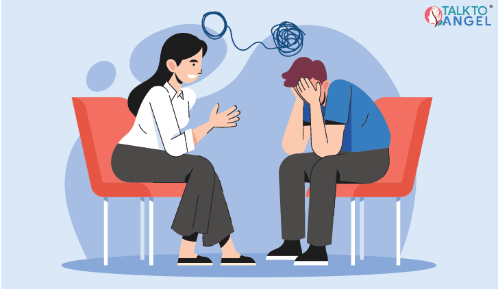

Why Many Individual Problems Remain Unheard
Many people experience difficulties in their daily lives but feel their concerns are ignored. This article explores why individual voices often struggle to gain attention.
Thoughtful articles focused on awareness, understanding, and ethical discussion of public issues.
The Blog section of MiPro_ReHub is created to support awareness, understanding, and thoughtful discussion around public issues that affect everyday life.
This space is meant to explain common challenges people face due to systems and practices, without blame or confrontation. Our goal is to help readers reflect, learn, and engage responsibly through calm and ethical dialogue.
Many people experience difficulties in their daily lives but feel their concerns are ignored. This article explores why individual voices often struggle to gain attention.
Online discussions can easily become harmful if not guided responsibly. This post explains why ethical debate matters.
Awareness is often the first step toward change. This article discusses how informed communities encourage thoughtful action.
How Collective Voices Help Resolve Public Problems
In many situations, people face challenges that affect their education, work, or daily living. While these problems may be shared by many, they are often experienced in isolation.
When individuals feel alone, their concerns often remain unheard.
Collective voices bring together similar experiences from different individuals. When people share their stories in a respectful and responsible space, patterns begin to emerge.
Sharing concerns collectively reduces fear and hesitation. A shared platform encourages participation by showing that every experience contributes to a larger understanding.
Ethical dialogue is not about blame, but about understanding.
When awareness increases, communities are better able to reflect on existing practices and consider responsible solutions. Change often begins with understanding.
At MiPro_ReHub, collective voices guided ethically help illuminate problems and support a more aware society.